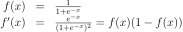

mlstatpy.ml.neural_tree¶
- class mlstatpy.ml.neural_tree.BaseNeuralTreeNet(estimator, optimizer=None, max_iter=100, early_th=None, verbose=False, lr=None, lr_schedule=None, l1=0.0, l2=0.0, momentum=0.9)[source][source]¶
Classifier or regressor following scikit-learn API.
- Paramètres:
estimator – instance of
NeuralTreeNet.X – training set
y – training labels
optimizer – optimizer, by default, it is
SGDOptimizer.max_iter – number maximum of iterations
early_th – early stopping threshold
verbose – more verbose
lr – to overwrite learning_rate_init if optimizer is None (unused otherwise)
lr_schedule – to overwrite lr_schedule if optimizer is None (unused otherwise)
l1 – L1 regularization if optimizer is None (unused otherwise)
l2 – L2 regularization if optimizer is None (unused otherwise)
momentum – used if optimizer is None
- decision_function(X)[source][source]¶
Returns the classification probabilities.
- Paramètres:
X – inputs
- Renvoie:
probabilities
- fit(X, y, sample_weights=None)[source][source]¶
Trains the estimator.
- Paramètres:
X – input features
y – expected classes (binary)
sample_weights – sample weights
- Renvoie:
self
- static onnx_shape_calculator()[source][source]¶
Shape calculator when converting this model into ONNX. See sklearn-onnx.
- set_fit_request(*, sample_weights: bool | None | str = '$UNCHANGED$') BaseNeuralTreeNet[source]¶
Configure whether metadata should be requested to be passed to the
fitmethod.Note that this method is only relevant when this estimator is used as a sub-estimator within a meta-estimator and metadata routing is enabled with
enable_metadata_routing=True(seesklearn.set_config()). Please check the User Guide on how the routing mechanism works.The options for each parameter are:
True: metadata is requested, and passed tofitif provided. The request is ignored if metadata is not provided.False: metadata is not requested and the meta-estimator will not pass it tofit.None: metadata is not requested, and the meta-estimator will raise an error if the user provides it.str: metadata should be passed to the meta-estimator with this given alias instead of the original name.
The default (
sklearn.utils.metadata_routing.UNCHANGED) retains the existing request. This allows you to change the request for some parameters and not others.Ajouté dans la version 1.3.
- class mlstatpy.ml.neural_tree.NeuralTreeNet(dim, empty=True)[source][source]¶
Node ensemble.
- Paramètres:
dim – space dimension
empty – empty network, other adds an identity node
<<<
import numpy from mlstatpy.ml.neural_tree import NeuralTreeNode, NeuralTreeNet w1 = numpy.array([-0.5, 0.8, -0.6]) neu = NeuralTreeNode(w1[1:], bias=w1[0], activation="sigmoid") net = NeuralTreeNet(2, empty=True) net.append(neu, numpy.arange(2)) ide = NeuralTreeNode(numpy.array([1.0]), bias=numpy.array([0.0]), activation="identity") net.append(ide, numpy.arange(2, 3)) X = numpy.abs(numpy.random.randn(10, 2)) pred = net.predict(X) print(pred)
>>>
/home/xadupre/github/mlstatpy/mlstatpy/ml/_neural_tree_node.py:184: DeprecationWarning: Conversion of an array with ndim > 0 to a scalar is deprecated, and will error in future. Ensure you extract a single element from your array before performing this operation. (Deprecated NumPy 1.25.) self.coef[0] = bias [[0.065 0.312 0.346 0.346] [0.889 0.415 0.491 0.491] [2.12 2.323 0.451 0.451] [1.133 0.256 0.563 0.563] [0.966 0.042 0.562 0.562] [0.218 1.58 0.219 0.219] [1.916 0.275 0.704 0.704] [0.89 1.411 0.346 0.346] [0.055 1.111 0.246 0.246] [0.253 0.491 0.356 0.356]]
- append(node, inputs)[source][source]¶
Appends a node into the graph.
- Paramètres:
node – node to add
inputs – index of input nodes
- static create_from_tree(tree, k=1.0, arch='one')[source][source]¶
Creates a
NeuralTreeNetinstance from a DecisionTreeClassifier- Paramètres:
tree – DecisionTreeClassifier
k – slant of the sigmoïd
arch – architecture, see below
- Renvoie:
The function only works for binary problems. Available architecture:
“one”: the method adds nodes with one output, there is no soecific definition of layers,
“compact”: the adds two nodes, the first computes the threshold, the second one computes the leaves output, a final node merges all outputs into one
See notebook Un arbre de décision en réseaux de neurones for examples.
- gradient_backward(graddx, X, inputs=False, cache=None)[source][source]¶
Computes the gradient in X.
- Paramètres:
graddx – existing gradient against the inputs
X – computes the gradient in X
inputs – if False, derivative against the coefficients, otherwise against the inputs.
cache – cache intermediate results to avoid more computation
- Renvoie:
gradient
- property shape¶
Returns the shape of the coefficients.
- to_dot(X=None)[source][source]¶
Exports the neural network into dot.
- Paramètres:
X – input as an example
- property training_weights¶
Returns the weights.
- class mlstatpy.ml.neural_tree.NeuralTreeNetClassifier(estimator, optimizer=None, max_iter=100, early_th=None, verbose=False, lr=None, lr_schedule=None, l1=0.0, l2=0.0, momentum=0.9)[source][source]¶
Classifier following scikit-learn API.
- Paramètres:
estimator – instance of
NeuralTreeNet.optimizer – optimizer, by default, it is
SGDOptimizer.max_iter – number maximum of iterations
early_th – early stopping threshold
verbose – more verbose
lr – to overwrite learning_rate_init if optimizer is None (unused otherwise)
lr_schedule – to overwrite lr_schedule if optimizer is None (unused otherwise)
l1 – L1 regularization if optimizer is None (unused otherwise)
l2 – L2 regularization if optimizer is None (unused otherwise)
momentum – used if optimizer is None
- predict_proba(X)[source][source]¶
Returns the classification probabilities.
- Paramètres:
X – inputs
- Renvoie:
probabilities
- set_fit_request(*, sample_weights: bool | None | str = '$UNCHANGED$') NeuralTreeNetClassifier[source]¶
Configure whether metadata should be requested to be passed to the
fitmethod.Note that this method is only relevant when this estimator is used as a sub-estimator within a meta-estimator and metadata routing is enabled with
enable_metadata_routing=True(seesklearn.set_config()). Please check the User Guide on how the routing mechanism works.The options for each parameter are:
True: metadata is requested, and passed tofitif provided. The request is ignored if metadata is not provided.False: metadata is not requested and the meta-estimator will not pass it tofit.None: metadata is not requested, and the meta-estimator will raise an error if the user provides it.str: metadata should be passed to the meta-estimator with this given alias instead of the original name.
The default (
sklearn.utils.metadata_routing.UNCHANGED) retains the existing request. This allows you to change the request for some parameters and not others.Ajouté dans la version 1.3.
- set_score_request(*, sample_weight: bool | None | str = '$UNCHANGED$') NeuralTreeNetClassifier[source]¶
Configure whether metadata should be requested to be passed to the
scoremethod.Note that this method is only relevant when this estimator is used as a sub-estimator within a meta-estimator and metadata routing is enabled with
enable_metadata_routing=True(seesklearn.set_config()). Please check the User Guide on how the routing mechanism works.The options for each parameter are:
True: metadata is requested, and passed toscoreif provided. The request is ignored if metadata is not provided.False: metadata is not requested and the meta-estimator will not pass it toscore.None: metadata is not requested, and the meta-estimator will raise an error if the user provides it.str: metadata should be passed to the meta-estimator with this given alias instead of the original name.
The default (
sklearn.utils.metadata_routing.UNCHANGED) retains the existing request. This allows you to change the request for some parameters and not others.Ajouté dans la version 1.3.
- class mlstatpy.ml.neural_tree.NeuralTreeNetRegressor(estimator, optimizer=None, max_iter=100, early_th=None, verbose=False, lr=None, lr_schedule=None, l1=0.0, l2=0.0, momentum=0.9)[source][source]¶
Regressor following scikit-learn API.
- Paramètres:
estimator – instance of
NeuralTreeNet.optimizer – optimizer, by default, it is
SGDOptimizer.max_iter – number maximum of iterations
early_th – early stopping threshold
verbose – more verbose
lr – to overwrite learning_rate_init if optimizer is None (unused otherwise)
lr_schedule – to overwrite lr_schedule if optimizer is None (unused otherwise)
l1 – L1 regularization if optimizer is None (unused otherwise)
l2 – L2 regularization if optimizer is None (unused otherwise)
momentum – used if optimizer is None
- set_fit_request(*, sample_weights: bool | None | str = '$UNCHANGED$') NeuralTreeNetRegressor[source]¶
Configure whether metadata should be requested to be passed to the
fitmethod.Note that this method is only relevant when this estimator is used as a sub-estimator within a meta-estimator and metadata routing is enabled with
enable_metadata_routing=True(seesklearn.set_config()). Please check the User Guide on how the routing mechanism works.The options for each parameter are:
True: metadata is requested, and passed tofitif provided. The request is ignored if metadata is not provided.False: metadata is not requested and the meta-estimator will not pass it tofit.None: metadata is not requested, and the meta-estimator will raise an error if the user provides it.str: metadata should be passed to the meta-estimator with this given alias instead of the original name.
The default (
sklearn.utils.metadata_routing.UNCHANGED) retains the existing request. This allows you to change the request for some parameters and not others.Ajouté dans la version 1.3.
- set_score_request(*, sample_weight: bool | None | str = '$UNCHANGED$') NeuralTreeNetRegressor[source]¶
Configure whether metadata should be requested to be passed to the
scoremethod.Note that this method is only relevant when this estimator is used as a sub-estimator within a meta-estimator and metadata routing is enabled with
enable_metadata_routing=True(seesklearn.set_config()). Please check the User Guide on how the routing mechanism works.The options for each parameter are:
True: metadata is requested, and passed toscoreif provided. The request is ignored if metadata is not provided.False: metadata is not requested and the meta-estimator will not pass it toscore.None: metadata is not requested, and the meta-estimator will raise an error if the user provides it.str: metadata should be passed to the meta-estimator with this given alias instead of the original name.
The default (
sklearn.utils.metadata_routing.UNCHANGED) retains the existing request. This allows you to change the request for some parameters and not others.Ajouté dans la version 1.3.
- mlstatpy.ml.neural_tree.label_class_to_softmax_output(y_label)[source][source]¶
Converts a binary class label into a matrix with two columns of probabilities.
<<<
import numpy from mlstatpy.ml.neural_tree import label_class_to_softmax_output y_label = numpy.array([0, 1, 0, 0]) soft_y = label_class_to_softmax_output(y_label) print(soft_y)
>>>
[[1. 0.] [0. 1.] [1. 0.] [1. 0.]]
- class mlstatpy.ml._neural_tree_node.NeuralTreeNode(weights, bias=None, activation='sigmoid', nodeid=-1, tag=None)[source][source]¶
One node in a neural network.
- Paramètres:
weights – weights
bias – bias, if None, draws a random number
activation – activation function
nodeid – node id
tag – unused but to add information on how this node was created
- property bias¶
Returns the weights.
- fill_cache(X)[source][source]¶
Creates a cache with intermediate results.
lXis the results before the activation function,aXis the results after the activation function, the prediction.
- static get_activation_dloss_function(activation)[source][source]¶
Returns the derivative of the default loss function based on the activation function. It returns a function df(x,y)/dw, df(w)/dw where w are the weights.
- static get_activation_function(activation)[source][source]¶
Returns the activation function. It returns a function y=f(x).
- static get_activation_gradient_function(activation)[source][source]¶
Returns the activation function. It returns a function y=f”(x). About the sigmoid:

- static get_activation_loss_function(activation)[source][source]¶
Returns a default loss function based on the activation function. It returns two functions g=loss(x,y).
- gradient_backward(graddx, X, inputs=False, cache=None)[source][source]¶
Computes the gradients at point X.
- Paramètres:
graddx – existing gradient against the inputs
X – computes the gradient in X
inputs – if False, derivative against the coefficients, otherwise against the inputs.
cache – cache intermediate results
- Renvoie:
gradient
- property input_weights¶
Returns the weights.
- property ndim¶
Returns the input dimension.
- property ndim_out¶
Returns the output dimension.
- property training_weights¶
Returns the weights stored in the neuron.
- class mlstatpy.ml._neural_tree_api._TrainingAPI[source][source]¶
Declaration of function needed to train a model.
- fit(X, y, optimizer=None, max_iter=100, early_th=None, verbose=False, lr=None, lr_schedule=None, l1=0.0, l2=0.0, momentum=0.9)[source][source]¶
Fits a neuron.
- Paramètres:
X – training set
y – training labels
optimizer – optimizer, by default, it is
SGDOptimizer.max_iter – number maximum of iterations
early_th – early stopping threshold
verbose – more verbose
lr – to overwrite learning_rate_init if optimizer is None (unused otherwise)
lr_schedule – to overwrite lr_schedule if optimizer is None (unused otherwise)
l1 – L1 regularization if optimizer is None (unused otherwise)
l2 – L2 regularization if optimizer is None (unused otherwise)
momentum – used if optimizer is None
- Renvoie:
self
- gradient(X, y, inputs=False)[source][source]¶
Computes the gradient in X knowing the expected value y.
- Paramètres:
X – computes the gradient in X
y – expected values
inputs – if False, derivative against the coefficients, otherwise against the inputs.
- Renvoie:
gradient
- gradient_backward(graddx, X, inputs=False, cache=None)[source][source]¶
Computes the gradient in X.
- Paramètres:
graddx – existing gradient against the outputs
X – computes the gradient in X
inputs – if False, derivative against the coefficients, otherwise against the inputs.
cache – cache intermediate results to avoid more computation
- Renvoie:
gradient
- property training_weights¶
Returns the weights.